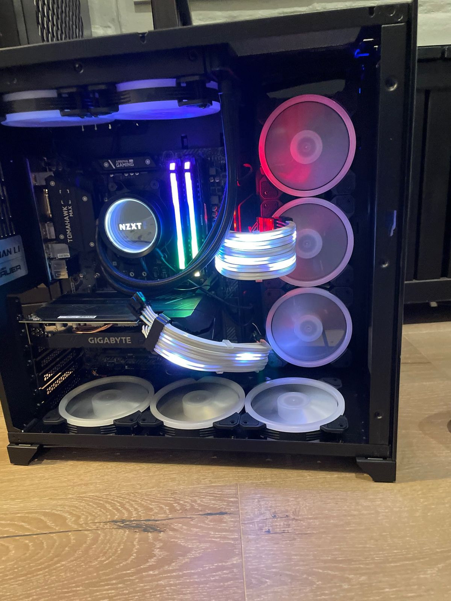
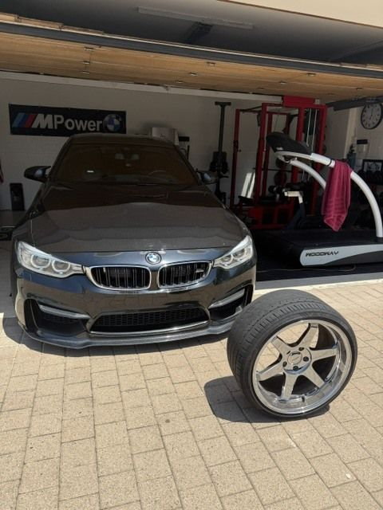

Mechanical Engineering Student
Joe Miles
Turning ideas into physical products — CAD models, machined prototypes, and everything in between.
About Me
I'm a Mechanical Engineering major at the TCU College of Science and Engineering, with internship experience designing spinal implant instruments and machined prototypes at ATEC Spine. I enjoy turning ideas into physical products — whether that's a CAD model, a custom PC build, or a small business.
Skills
Technical
Personal
Interests
Personal Projects

PC Build
Built my own computer from scratch — planning the parts list, checking compatibility across the motherboard, cooling, and GPU, and assembling everything by hand. Routing the cabling and getting the liquid cooling loop right taught me a lot about patience and troubleshooting under pressure.

Automotive Projects
Worked on and modified my own BMW M4, from wheel and suspension upgrades to general maintenance. Learning how the car's systems fit together — and fixing what breaks — has been one of the best hands-on complements to what I study in the classroom.
Experience
Mechanical Engineer Intern
May 2026 – August 2026ATEC Spine · San Diego, CA
- Solved a design challenge for a surgical instrument, advancing the final design to a machined metal prototype.
- Designed and refined 3D CAD models and engineering drawings for spinal implant instruments using SolidWorks.
- Cross-functionally collaborated with coworkers to improve designs through reviews, prototyping, and DFMA.
- Gained hands-on experience with CNC machining, part fabrication, inspection, and manufacturing processes in a medical device environment.
- Applied GD&T, DFMA, and engineering practices while creating products from concept to production.
Founder
December 2023 – October 2024Morning Joe · Rancho Santa Fe, CA
- Founded and operated a streetwear brand, overseeing product design, branding, and online sales.
- Used social media to market new product releases and grow a loyal customer base.
- Gained hands-on experience in entrepreneurship, marketing, and small business management.